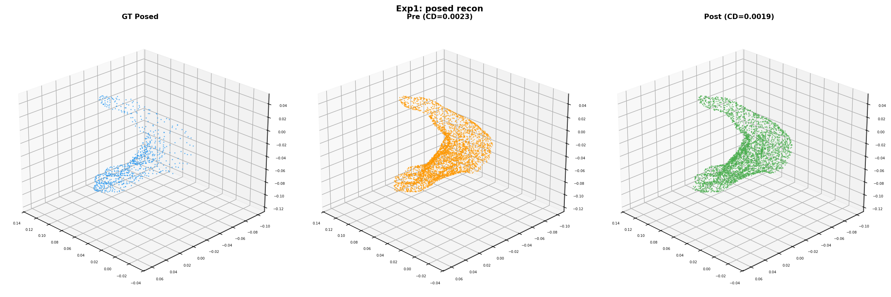
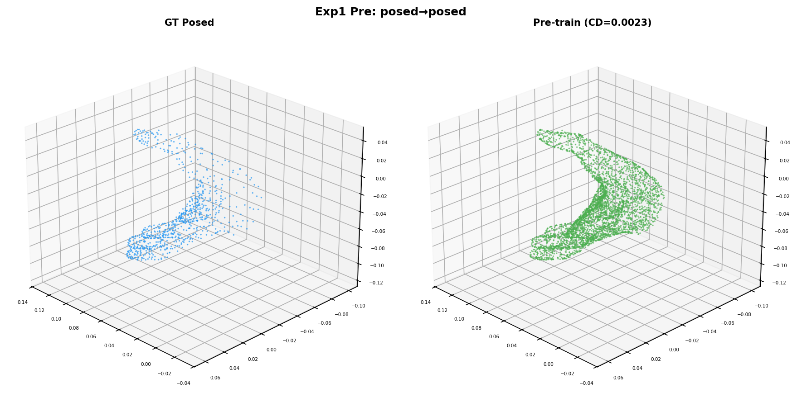
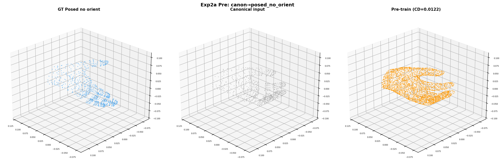
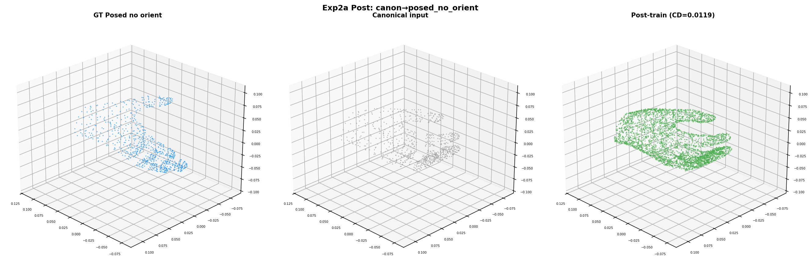
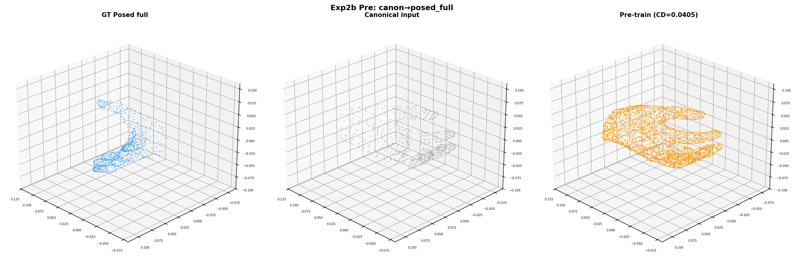
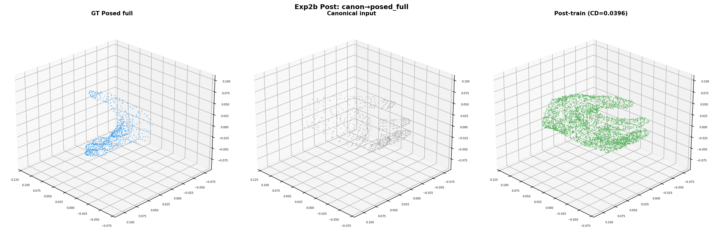

Goal: Train the SLat decoder with differentiable chamfer loss on decoded mesh vertices, following Trellis.2’s training paradigm of mesh-level supervision. Test reconstruction (Exp 1) and deformation (Exp 2a, 2b).
Previous voxel-level losses (intersected BCE, vertex MSE) failed for cross-pose training because different poses produce non-overlapping voxel grids (2% match rate). Mesh-level chamfer loss operates on decoded vertex positions, naturally handling different spatial structures.
precomputed_SLat (detached) → SLat decoder → mesh vertices (normalized)
|
chamfer_loss(pred_verts, gt_normalized_verts)
|
backward → decoder params updated
Efficiency: Since the encoder input is always canonical mesh (fixed across samples), SLat is precomputed once. Each training step only runs the decoder forward + chamfer + backward (~0.6s on H100).
| Metric | Value |
|---|---|
| Input-GT chamfer | 0.000 (same mesh) |
| Pre-train CD | 0.00230 |
| Post-train CD (100 steps) | 0.00195 (−15%) |

Exp 1: GT posed (blue), pre-train prediction (orange, CD=0.0023), post-train prediction (green, CD=0.0019). Training visibly improves alignment.

Pre-training: GT (blue) vs prediction (green). CD=0.0023.
Post-training (100 steps): GT (blue) vs prediction (green). CD=0.0019.
| Metric | Value |
|---|---|
| Input-GT chamfer (deformation gap) | 0.0139 |
| Pre-train CD | 0.01217 |
| Post-train CD (100 steps) | 0.01193 (−2%) |

Pre-training: GT posed w/o orient (blue), canonical input (gray), prediction (orange). CD=0.012.

Post-training: prediction (green) slightly closer to GT. CD=0.012.
| Metric | Value |
|---|---|
| Input-GT chamfer (deformation gap) | 0.0388 |
| Pre-train CD | 0.04065 |
| Post-train CD (100 steps) | 0.03951 (−3%) |

Pre-training: GT posed full (blue), canonical input (gray), prediction (orange). CD=0.041.

Post-training: prediction (green) slightly improved. CD=0.040.
| Experiment | Input-GT gap | Pre CD | Post CD | Change |
|---|---|---|---|---|
| Exp 1: posed → posed | 0.000 | 0.00230 | 0.00195 | −15% |
| Exp 2a: canon → posed no orient | 0.014 | 0.01217 | 0.01193 | −2% |
| Exp 2b: canon → posed full | 0.039 | 0.04065 | 0.03951 | −3% |
Gradients flow from chamfer loss through mesh extraction to decoder parameters. Loss decreases and chamfer improves. 0.6s/step on H100.
Exp 2a/2b show only 2–3% improvement because the decoder receives canonical SLat (fixed, detached) and has no information about which pose to produce. The pose information must come from the image via global_blocks attention. The decoder’s job is to faithfully decode whatever SLat it receives — the deformation must happen in SLat space, driven by global_blocks.
The complete training loop:
canonical_SLat → input_proj → global_blocks(+image visual tokens) → output_proj → modified_SLat → decoder → mesh
↑ pose info from image ↓
chamfer(pred, posed_GT)
Training: input_proj, global_blocks, output_proj, SLat decoder. The global_blocks learn to extract pose from the image and modify canonical SLat to produce posed output. This is the core HOI3R architectural hypothesis.